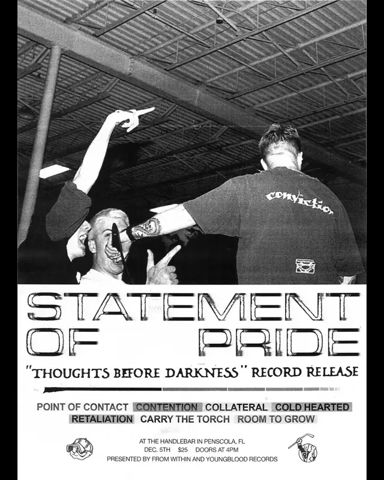

up next · Dec 5, 2026 · the handlebarwatch & listen
shows


on the record
on the record since February 2012 on a bill with truth inside and divebomb.
- first loggedFeb 10, 2012 · sluggo’s
- most played atsluggo’s ×2 shows
- biggest lineup5 acts · Feb 2012
act pages are built automatically from the show archive, so something may be off: a misspelled name, a missing link, the wrong type, or a bad local/touring call. no disrespect meant. wrong on any of that, or want a listen link (youtube or bandcamp) or live footage added? send it in.